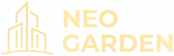

![]() 29-IYUN
VAQTI: 20:30
29-IYUN
VAQTI: 20:30
Olmaliq shahar markazidan
hali hech kim bermagan
qulay takliflar asosida
xonadon xarid qiling!
- Boshlang‘ich to‘lovsiz
- 60 oyga bo‘lib to‘lash
- Faqat pasport evaziga
Oyiga 3 mln 400
ming so‘mdan
Ro’yxatdan o’tish uchun qolgan vaqt: 100 ta xonadon
02
DAQIQA
00
SONIYA